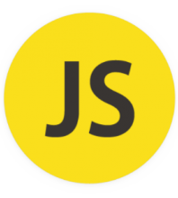
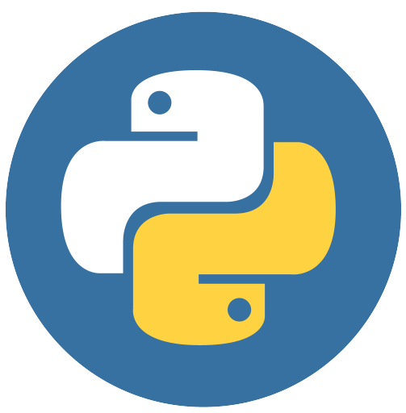
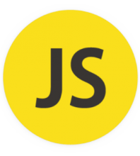
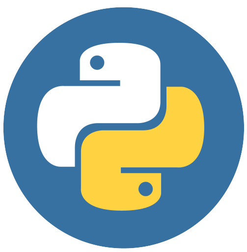

MEUS PROJETOS
Este projeto foi baseado em um pet shop que foi a primeira empresa que eu trabalhei, ele foi elaborado para demonstrar alguns dos principais produtos mais procurados e também para mostrar a localização detalhada de cada filial.
Este projeto foi baseado em uma rústica lanchonete local, possui alguns dos principais produtos do cardápio e também possui uma estrutura de tipo ou sabor de escolha, essa estrutura levará o usuário para o WhatsApp da empresa com o produto escolhido.
Este site foi baseado em um dos melhores jogadores de futebol atualmente, nele é mostrado quais times esse jogador passou, quantos gols ele fez até o momento em sua carreira e todas as suas conquistas.
Este projeto foi feito com o intuito de fazer uma triagem online voltada para pessoas que tem sintomas similares ao da dengue, ele fornece uma lista de sintomas que devem ser selecionados de acordo com o que o usuário está sentindo e retorna uma resposta sobre o estado de saúde.
Este site foi construído especificamente para uma academia local, é uma Landing Page composta por um pequeno formulário de cadastro que será enviado diretamente para o WhatsApp da empresa, com todos os dados preenchidos.
Este projeto trata-se de um cardápio de uma empresa local, ele possui um carrinho de compras que está interligado com as escolhas do usuário, ele coleta todos os dados preenchidos pelo usuário e os encaminha para o WhatsApp da empresa como uma solicitação de entrega.
O projeto NeoJobs foi o meu primeiro projeto postado por uma empresa, a página possui os serviços prestados pela empresa, um formulário para envio de currículo e um formulário para solicitação de serviços.
Este projeto é de uma grande empresa na área de gases em Niterói-RJ, possui uma estrutura muito sólida e detalhada sobre os produtos e serviços disponibilizados pela empresa, com um designer simples e objetivo.
O projeto premag possui uma estrutura robusta com um designer simples e objetivo, o objetivo do site é fazer com que o usuário conheça mais dos métodos e premissas de construção utilizados pela empresa.

 


